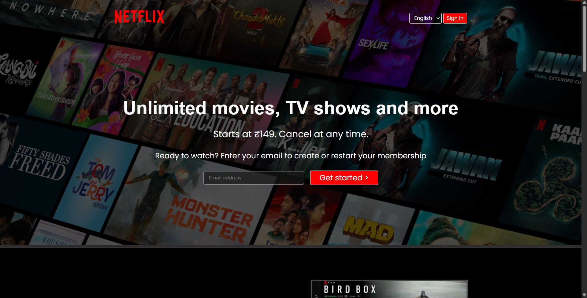
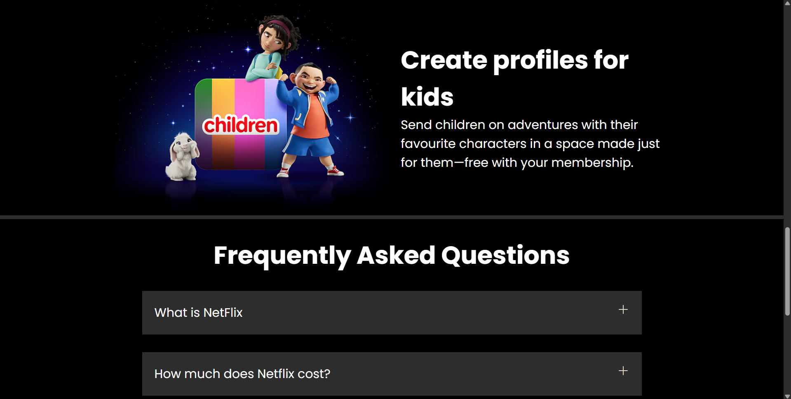
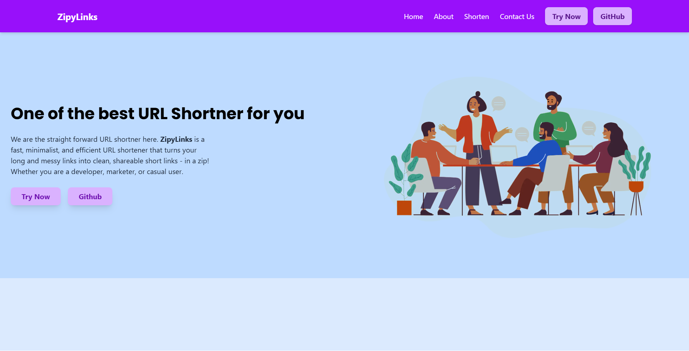
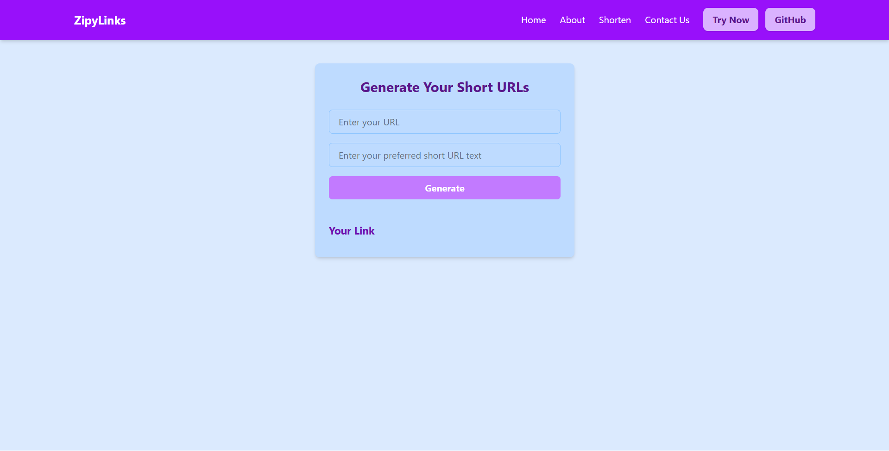

Full-Stack Web Developer | IT Undergraduate
I'm a passionate Web Developer with hands-on experience in building modern, responsive web applications using Next.js, React, TailwindCSS, and MongoDB. I thrive on solving real-world problems by turning ideas into live projects, whether it’s creating a custom URL shortener, cloning platforms like Netflix, or optimizing UI/UX for seamless performance across devices.
I specialize in modern web apps.
I’m currently pursuing B.Tech in Information Technology at Medi-Caps University, Indore (2022–2026). Though I’m still exploring full-stack technologies, I’m most confident with frontend development and gradually gaining experience with Node.js and MongoDB for backend needs.
I built a fully responsive Netflix homepage clone using only HTML and CSS, replicating the original look and feel...


A clean and responsive URL Shortener web app where users can input long URLs and get shortened, shareable links.
Deployed on Vercel. Demo version has static view (no live DB)

